3 A Review of Statistics using R
This section reviews important statistical concepts:
Estimation of unknown population parameters
Hypothesis testing
Confidence intervals
These methods are heavily used in econometrics. We will discuss them in the simple context of inference about an unknown population mean and discuss several applications in R. These R applications rely on the following packages which are not part of the base version of R:
readxl - allows to import data from Excel to R.
dplyr - provides a flexible grammar for data manipulation.
MASS - a collection of functions for applied statistics.
Make sure these are installed before you go ahead and try to replicate the examples. The safest way to do so is by checking whether the following code chunk executes without any errors.
3.1 Estimation of the Population Mean
Key Concept 3.1
Estimators and Estimates
Estimators are functions of sample data drawn from an unknown population. Estimates are numeric values computed by estimators based on the sample data. Estimators are random variables because they are functions of random data. Estimates are nonrandom numbers.
Think of some economic variable, for example hourly earnings of college graduates, denoted by \(Y\). Suppose we are interested in \(\mu_Y\) the mean of \(Y\). In order to exactly calculate \(\mu_Y\) we would have to interview every working graduate in the economy. We simply cannot do this due to time and cost constraints. However, we can draw a random sample of \(n\) i.i.d. observations \(Y_1, \dots, Y_n\) and estimate \(\mu_Y\) using one of the simplest estimators in the sense of Key Concept 3.1 one can think of, that is,
\[ \overline{Y} = \frac{1}{n} \sum_{i=1}^n Y_i, \]
the sample mean of \(Y\). Then again, we could use an even simpler estimator for \(\mu_Y\): the very first observation in the sample, \(Y_1\). Is \(Y_1\) a good estimator? For now, assume that
\[ Y \sim \chi_{12}^2, \]
which is not too unreasonable as hourly income is non-negative and we expect many hourly earnings to be in a range of \(5\) Euro to \(15\) Euro. Moreover, it is common for income distributions to be skewed to the right — a property of the \(\chi^2_{12}\) distribution.
# plot the chi_12^2 distribution
curve(dchisq(x, df=12),
from = 0,
to = 40,
ylab = "Density",
xlab = "Hourly earnings in Euro")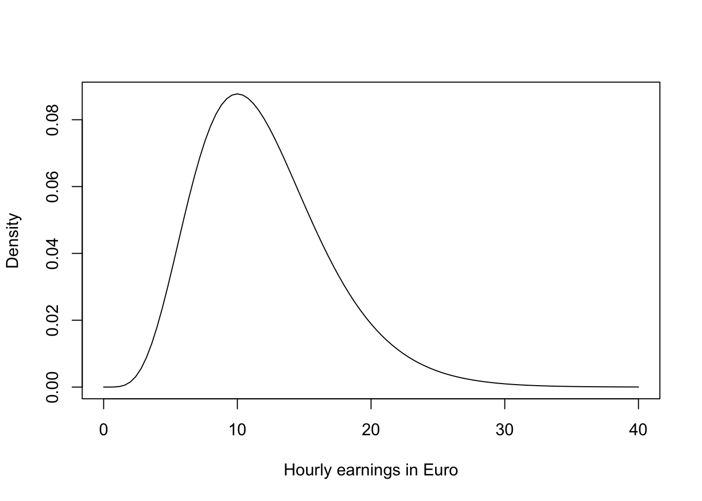
We now draw a sample of \(n=100\) observations and take the first observation \(Y_1\) as an estimate for \(\mu_Y\)
# set seed for reproducibility
set.seed(1)
# sample from the chi_12^2 distribution, use only the first observation
rsamp <- rchisq(n = 100, df = 12)
rsamp[1]
#> [1] 8.257893The estimate \(8.26\) is not too far away from \(\mu_Y = 12\) but it is somewhat intuitive that we could do better: the estimator \(Y_1\) discards a lot of information and its variance is the population variance:
\[ \text{Var}(Y_1) = \text{Var}(Y) = 2 \cdot 12 = 24 \]
This brings us to the following question: What is a good estimator of an unknown parameter in the first place? This question is tackled in Key Concepts 3.2 and 3.3.
Key Concept 3.2
Bias, Consistency and Efficiency
Desirable characteristics of an estimator include unbiasedness, consistency and efficiency.
Unbiasedness:
If the mean of the sampling distribution of some estimator \(\hat\mu_Y\) for the population mean \(\mu_Y\) equals \(\mu_Y\),
\[ E(\hat\mu_Y) = \mu_Y, \]
the estimator is unbiased for \(\mu_Y\). The bias of \(\hat\mu_Y\) then is \(0\):
\[ E(\hat\mu_Y) - \mu_Y = 0. \]
Consistency:
We want the uncertainty of the estimator \(\mu_Y\) to decrease as the number of observations in the sample grows. More precisely, we want the probability that the estimate \(\hat\mu_Y\) falls within a small interval around the true value \(\mu_Y\) to get increasingly closer to \(1\) as \(n\) grows. We write this as
\[ \hat\mu_Y \xrightarrow{p} \mu_Y \]
Variance and efficiency:
We want the estimator to be efficient. Suppose we have two estimators, \(\hat\mu_Y\) and \(\overset{\sim}{\mu}_Y\) and for some given sample size \(n\) it holds that
\[ E(\hat\mu_Y) = E(\overset{\sim}{\mu}_Y) = \mu_Y,\] but \[\text{Var}(\hat\mu_Y) < \text{Var}(\overset{\sim}{\mu}_Y).\]
We then prefer to use \(\hat\mu_Y\) as it has a lower variance than \(\overset{\sim}{\mu}_Y\), meaning that \(\hat\mu_Y\) is more efficient in using the information provided by the observations in the sample.
3.2 Properties of the Sample Mean
A more precise way to express consistency of an estimator \(\hat\mu\) for a parameter \(\mu\) is
\[ P(|\hat{\mu} - \mu|<\epsilon) \xrightarrow[n \rightarrow \infty]{p} 1 \quad \text{for any}\quad\epsilon>0.\]
This expression says that the probability of observing a deviation from the true value \(\mu\) that is smaller than some arbitrary \(\epsilon > 0\) converges to \(1\) as \(n\) grows. Consistency does not require unbiasedness.To examine properties of the sample mean as an estimator for the corresponding population mean, consider the following R example.
We generate a population, denoted as pop, consisting of observations \(Y_i\), where \(i=1,\dots,10000\). These observations are generated from a normal distribution with mean \(\mu = 10\) and variance \(\sigma^2 = 1\).
To investigate the behavior of the estimator \(\hat{\mu} = \bar{Y}\), we can draw random samples from this population and calculate \(\bar{Y}\) for each of them. This is easily done by making use of the function replicate(). The argument expr is evaluated n times. In this case we draw samples of sizes \(n=5\) and \(n=25\), compute the sample means and repeat this exactly \(N=25000\) times.
For comparison purposes we store results for the estimator \(Y_1\), the first observation in a sample of size \(5\), separately.
# generate a fictious population
pop <- rnorm(10000, 10, 1)
# sample from the population and estimate the mean
est1 <- replicate(expr = mean(sample(x = pop, size = 5)), n = 25000)
est2 <- replicate(expr = mean(sample(x = pop, size = 25)), n = 25000)
fo <- replicate(expr = sample(x = pop, size = 5)[1], n = 25000)Check that est1 and est2 are vectors of length \(25000\):
# check if object type is vector
is.vector(est1)
#> [1] TRUE
is.vector(est2)
#> [1] TRUE
# check length
length(est1)
#> [1] 25000
length(est2)
#> [1] 25000The code chunk below produces a plot of the sampling distributions of the estimators \(\bar{Y}\) and \(Y_1\) on the basis of the \(25000\) samples in each case. We also plot the density function of the \(\mathcal{N}(10,1)\) distribution.
# plot density estimate Y_1
plot(density(fo),
col = "green",
lwd = 2,
ylim = c(0, 2),
xlab = "Estimates",
main = "Sampling Distributions of Unbiased Estimators")
# add density estimate for the distribution of the sample mean with n=5 to the plot
lines(density(est1),
col = "steelblue",
lwd = 2,
bty = "l")
# add density estimate for the distribution of the sample mean with n=25 to the plot
lines(density(est2),
col = "red2",
lwd = 2)
# add a vertical line at the true parameter
abline(v = 10, lty = 2)
# add N(10,1) density to the plot
curve(dnorm(x, mean = 10),
lwd = 2,
lty = 2,
add = T)
# add a legend
legend("topleft",
legend = c("N(10,1)",
expression(Y[n == 1]),
expression(bar(Y)[n == 5]),
expression(bar(Y)[n == 25])
),
lty = c(2, 1, 1, 1),
col = c("black","green", "steelblue", "red2"),
lwd = 2)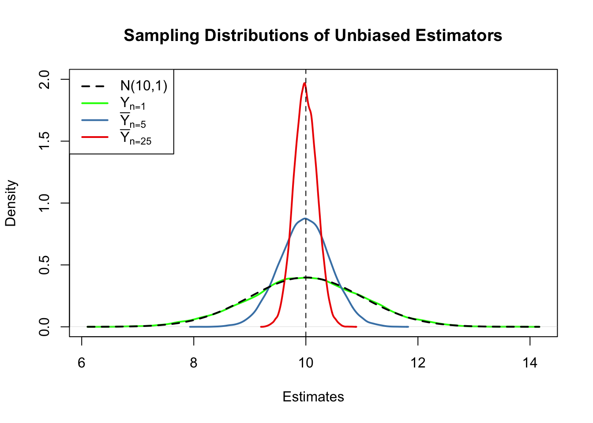
First, all sampling distributions (represented by the solid lines) are centered around \(\mu = 10\). This is evidence for the unbiasedness of \(Y_1\), \(\overline{Y}_{5}\) and \(\overline{Y}_{25}\). Of course, the theoretical density \(\mathcal{N}(10,1)\) is also centered at \(10\).
Next, have a look at the spread of the sampling distributions. Several things are noteworthy:
The sampling distribution of \(Y_1\) (green curve) tracks the density of the \(\mathcal{N}(10,1)\) distribution (black dashed line) pretty closely. In fact, the sampling distribution of \(Y_1\) is the \(\mathcal{N}(10,1)\) distribution. This is less surprising if you keep in mind that the \(Y_1\) estimator does nothing but reporting an observation that is randomly selected from a population with \(\mathcal{N}(10,1)\) distribution. Hence, \(Y_1 \sim \mathcal{N}(10,1)\). Note that this result does not depend on the sample size \(n\): the sampling distribution of \(Y_1\) is always the population distribution, no matter how large the sample is, \(Y_1\) is a good estimate of \(\mu_Y\), but we can do better.
Both the sampling distributions of \(\overline{Y}\) show less dispersion than the sampling distribution of \(Y_1\). This means that \(\overline{Y}\) has a lower variance than \(Y_1\). In view of Key Concepts 3.2 and 3.3, we find that \(\overline{Y}\) is a more efficient estimator than \(Y_1\). In fact, this holds for all \(n>1\).
\(\overline{Y}\) shows a behavior illustrating consistency (see Key Concept 3.2). The blue and the red densities are much more concentrated around \(\mu=10\) than the green one. As the number of observations is increased from \(1\) to \(5\), the sampling distribution tightens around the true parameter. By increasing the sample size to \(25\), this effect becomes more apparent. This implies that the probability of obtaining estimates that are close to the true value increases with \(n\). This is also reflected by the estimated values of the density function close to 10: the larger the sample size, the larger the value of the density.
We encourage you to go ahead and modify the code. Try out different values for the sample size and see how the sampling distribution of \(\overline{Y}\) changes!
\(\overline{Y}\) is the Least Squares Estimator of \(\mu_Y\)
Assume you have some observations \(Y_1,\dots,Y_n\) on \(Y \sim \mathcal{N}(10,1)\) (which is unknown) and would like to find an estimator \(m\) that predicts the observations as good as possible. Here, we aim to find an estimator \(m\) that results in a small total squared deviation between the predicted and observed values. Mathematically, this means we want to find an \(m\) that minimizes
\[\begin{equation} \sum_{i=1}^n (Y_i - m)^2. \tag{3.1} \end{equation}\]
Think of \(Y_i - m\) as the mistake made when predicting \(Y_i\) by \(m\). We could also minimize the sum of absolute deviations from \(m\) but minimizing the sum of squared deviations is mathematically more convenient (and will lead to a different result). That is why the estimator we are looking for is called the least squares estimator. \(m = \overline{Y}\), the sample mean, is this estimator.
We can show this by generating a random sample and plotting (3.1) as a function of \(m\).
# define the function and vectorize it
sqm <- function(m) {
sum((y-m)^2)
}
sqm <- Vectorize(sqm)
# draw random sample and compute the mean
y <- rnorm(100, 10, 1)
mean(y)
#> [1] 10.1364# plot the objective function
curve(sqm(x),
from = -50,
to = 70,
xlab = "m",
ylab = "sqm(m)")
# add vertical line at mean(y)
abline(v = mean(y),
lty = 2,
col = "darkred")
# add annotation at mean(y)
text(x = mean(y),
y = 0,
labels = paste(round(mean(y), 2)))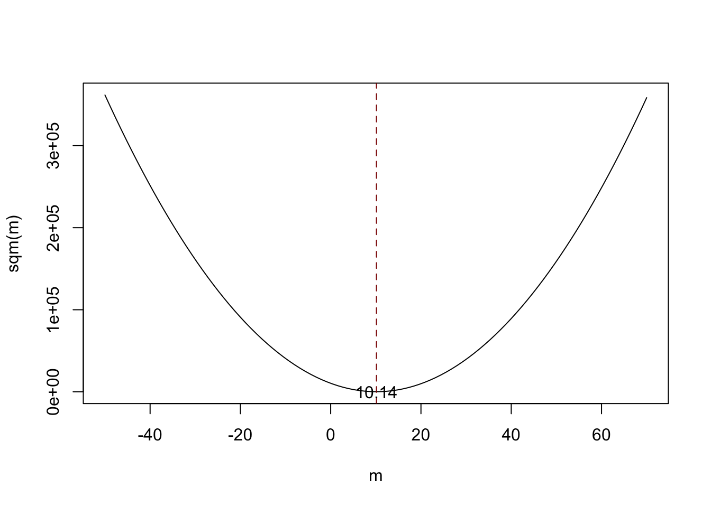
Notice that (3.1) is a quadratic function so that there is only one minimum. The plot shows that this minimum lies exactly at the sample mean of the sample data.
Some R functions can only interact with functions that take a vector as an input and evaluate the function body on every entry of the vector, for example curve(). We call such functions vectorized functions and it is often a good idea to write vectorized functions yourself, although this is cumbersome in some cases. Having a vectorized function in R is never a drawback since, these functions work on both single values and vectors.
Let us look at the function sqm(), which is non-vectorized:
sqm <- function(m) {
sum((y-m)^2) #body of the function
}
Providing, e.g., c(1,2,3) as the argument m would cause an error since then the operation y-m is invalid: the vectors y and m are of incompatible dimensions. This is why we cannot use sqm() in conjunction with curve().
Here Vectorize() comes into play. It generates a vectorized version of a non-vectorized function.Why is Random Sampling Important ?
So far, we assumed (sometimes implicitly) that the observed data \(Y_1, \dots, Y_n\) are the result of a sampling process that satisfies the assumption of simple random sampling. This assumption often is fulfilled when estimating a population mean using \(\overline{Y}\). If this is not the case, estimates may be biased.
Let us fall back to pop, the fictitious population of \(10000\) observations and compute the population mean \(\mu_{\texttt{pop}}\):
Next we sample \(25\) observations from pop with sample() and estimate \(\mu_{\texttt{pop}}\) using \(\overline{Y}\) repeatedly. However, now we use a sampling scheme that deviates from simple random sampling: instead of ensuring that each member of the population has the same chance to end up in a sample, we assign a higher probability of being sampled to the \(2500\) smallest observations of the population by setting the argument prob to a suitable vector of probability weights:
# simulate outcomes for the sample mean when the i.i.d. assumption fails
est3 <- replicate(n = 25000,
expr = mean(sample(x = sort(pop),
size = 25,
prob = c(rep(4, 2500), rep(1, 7500)))))
# compute the sample mean of the outcomes
mean(est3)
#> [1] 9.443067Next we plot the sampling distribution of \(\overline{Y}\) for this non-i.i.d. case and compare it to the sampling distribution when the i.i.d. assumption holds.
# sampling distribution of sample mean, i.i.d. holds, n=25
plot(density(est2),
col = "steelblue",
lwd = 2,
xlim = c(8, 11),
xlab = "Estimates",
main = "When the i.i.d. Assumption Fails")
# sampling distribution of sample mean, i.i.d. fails, n=25
lines(density(est3),
col = "red2",
lwd = 2)
# add a legend
legend("topleft",
legend = c(expression(bar(Y)[n == 25]~", i.i.d. fails"),
expression(bar(Y)[n == 25]~", i.i.d. holds")
),
lty = c(1, 1),
col = c("red2", "steelblue"),
lwd = 2)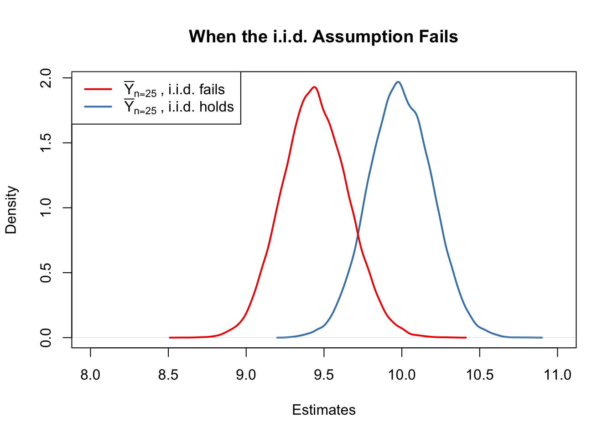
Here, the failure of the i.i.d. assumption implies that, on average, we underestimate \(\mu_Y\) using \(\overline{Y}\): the corresponding distribution of \(\overline{Y}\) is shifted to the left. In other words, \(\overline{Y}\) is a biased estimator for \(\mu_Y\) if the i.i.d. assumption does not hold.
3.3 Hypothesis Tests concerning the Population Mean
In this section we briefly review concepts in hypothesis testing and discuss how to conduct hypothesis tests in R. We focus on drawing inferences about an unknown population mean.
About Hypotheses and Hypothesis Testing
In a significance test we want to exploit the information contained in a sample as evidence in favor of against a hypothesis. Essentially, hypotheses are simple questions that can be answered by ‘yes’ or ‘no’. In a hypothesis test we typically deal with two different hypotheses:
The null hypothesis, denoted by \(H_0\), is the hypothesis we are interested in testing.
There must be an alternative hypothesis, denoted by \(H_1\), the hypothesis that is thought to hold if the null hypothesis is rejected.
The null hypothesis that the population mean of \(Y\) equals the value \(\mu_{Y,0}\) is written as
\[ H_0: E(Y) = \mu_{Y,0}. \]
Often the alternative hypothesis is chosen such that it is the most general one,
\[ H_1: E(Y) \neq \mu_{Y,0}, \]
meaning that \(E(Y)\) may be anything but the value under the null hypothesis. This is called a two-sided alternative.
For the sake of brevity, we only consider two-sided alternatives in the subsequent sections of this chapter.
The p-Value
Assume that the null hypothesis is true. The \(p\)-value is the probability of drawing data and observing a corresponding test statistic that is at least as adverse to what is stated under the null hypothesis as the test statistic actually computed using the sample data.
In the context of the population mean and the sample mean, this definition can be stated mathematically in the following way:
\[\begin{equation} p \text{-value} = P_{H_0}\left[ \lvert \overline{Y} - \mu_{Y,0} \rvert > \lvert \overline{Y}^{act} - \mu_{Y,0} \rvert \right] , \tag{3.2} \end{equation}\]
In (3.2), \(\overline{Y}^{act}\) is the sample mean for the data at hand (a value). In order to compute the \(p\)-value as in (3.2), knowledge about the sampling distribution of \(\overline{Y}\) (a random variable) when the null hypothesis is true (the null distribution) is required. However, in most cases the sampling distribution and thus the null distribution of \(\overline{Y}\) are unknown. Fortunately, the CLT (see Key Concept 2.7) allows for the large-sample approximation \[ \overline{Y} \approx \mathcal{N}(\mu_{Y,0}, \, \sigma^2_{\overline{Y}}) \ \ , \ \ \sigma^2_{\overline{Y}} = \frac{\sigma_Y^2}{n}, \] assuming the null hypothesis \(H_0: E(Y) = \mu_{Y, 0}\) is true. With some algebra it follows for large \(n\) that
\[ \frac{\overline{Y} - \mu_{Y,0}}{\sigma_Y/\sqrt{n}} \sim \mathcal{N}(0,1). \]
So in large samples, the \(p\)-value can be computed without knowledge of the exact sampling distribution of \(\overline{Y}\) using the above normal approximation.
Calculating the p-Value when the Standard Deviation is Known
For now, let us assume that \(\sigma_{\overline{Y}}\) is known. Then, we can rewrite (3.2) as
\[\begin{align} p \text{-value} =& \, P_{H_0}\left[ \left\lvert \frac{\overline{Y} - \mu_{Y,0}}{\sigma_{\overline{Y}}} \right\rvert > \left\lvert \frac{\overline{Y}^{act} - \mu_{Y,0}}{\sigma_{\overline{Y}}} \right\rvert \right] \\ =& \, 2 \cdot \Phi \left[ - \left\lvert \frac{\overline{Y}^{act} - \mu_{Y,0}}{\sigma_{\overline{Y}}} \right\rvert\right]. \tag{3.3} \end{align}\]
The \(p\)-value is this area in the tails of the \(\mathcal{N}(0,1)\) distribution that lies beyond
\[\begin{equation} \pm \left\lvert \frac{\overline{Y}^{act} - \mu_{Y,0}}{\sigma_{\overline{Y}}} \right\rvert \tag{3.4} \ , \end{equation}\]
We now use R to visualize what is stated in (3.3) and (3.4). The next code chunk replicates Figure 3.1 of the book.
# plot the standard normal density on the interval [-4,4]
curve(dnorm(x),
xlim = c(-4, 4),
main = "Calculating a p-Value",
yaxs = "i",
xlab = "z",
ylab = "",
lwd = 2,
axes = "F")
# add x-axis
axis(1,
at = c(-1.5, 0, 1.5),
padj = 0.75,
labels = c(expression(-frac(bar(Y)^"act"~-~bar(mu)["Y,0"], sigma[bar(Y)])),
0,
expression(frac(bar(Y)^"act"~-~bar(mu)["Y,0"], sigma[bar(Y)]))))
# shade p-value/2 region in left tail
polygon(x = c(-6, seq(-6, -1.5, 0.01), -1.5),
y = c(0, dnorm(seq(-6, -1.5, 0.01)),0),
col = "steelblue")
# shade p-value/2 region in right tail
polygon(x = c(1.5, seq(1.5, 6, 0.01), 6),
y = c(0, dnorm(seq(1.5, 6, 0.01)), 0),
col = "steelblue")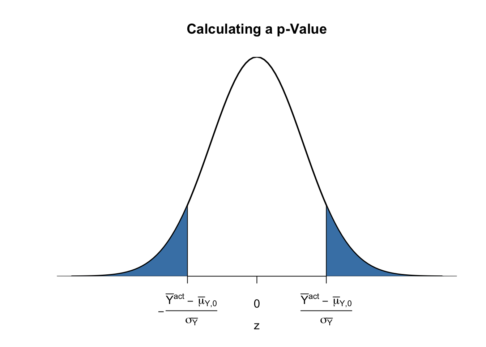
Sample Variance, Sample Standard Deviation and Standard Error
If \(\sigma^2_Y\) is unknown, it must be estimated. This can be done using the sample variance
\[\begin{equation} s_Y^2 = \frac{1}{n-1} \sum_{i=1}^n (Y_i - \overline{Y})^2. \end{equation}\]
Furthermore
\[\begin{equation} s_Y = \sqrt{\frac{1}{n-1} \sum_{i=1}^n (Y_i - \overline{Y})^2} \end{equation}\]
is a suitable estimator for the standard deviation of \(Y\). In R, \(s_Y\) is implemented in the function sd(), see ?sd.
Using R we can illustrate that \(s_Y\) is a consistent estimator for \(\sigma_Y\), that is
\[ s_Y \overset{p}{\longrightarrow} \sigma_Y. \]
The idea here is to generate a large number of samples \(Y_1,\dots,Y_n\) where, \(Y\sim \mathcal{N}(10, 9)\) say, estimate \(\sigma_Y\) using \(s_Y\) and investigate how the distribution of \(s_Y\) changes as \(n\) gets larger.
# vector of sample sizes
n <- c(10000, 5000, 2000, 1000, 500)
# sample observations, estimate using 'sd()' and plot the estimated distributions
sq_y <- replicate(n = 10000, expr = sd(rnorm(n[1], 10, 3)))
plot(density(sq_y),
main = expression("Sampling Distributions of" ~ s[Y]),
xlab = expression(s[y]),
lwd = 2)
for (i in 2:length(n)) {
sq_y <- replicate(n = 10000, expr = sd(rnorm(n[i], 10, 3)))
lines(density(sq_y),
col = i,
lwd = 2)
}
# add a legend
legend("topleft",
legend = c(expression(n == 10000),
expression(n == 5000),
expression(n == 2000),
expression(n == 1000),
expression(n == 500)),
col = 1:5,
lwd = 2)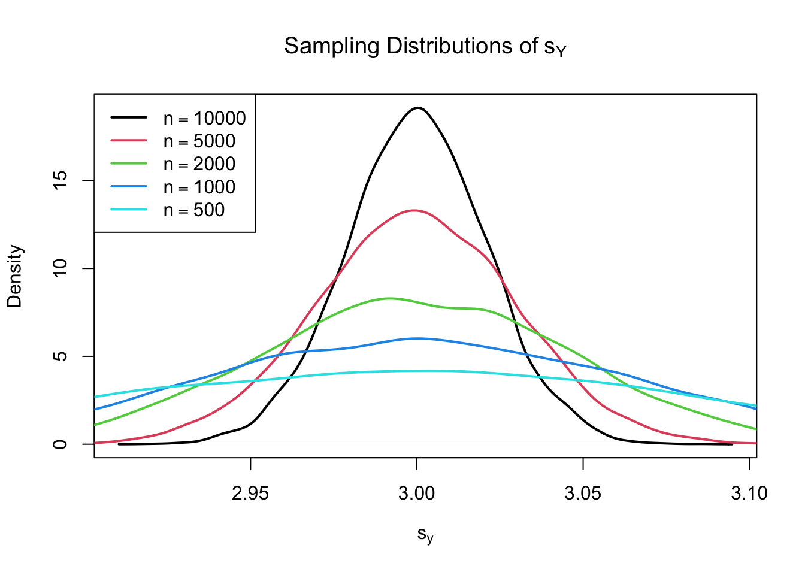
The plot shows that the distribution of \(s_Y\) tightens around the true value \(\sigma_Y = 3\) as \(n\) increases.
The function that estimates the standard deviation of an estimator is called the standard error of the estimator. Key Concept 3.4 summarizes the terminology in the context of the sample mean.
Key Concept 3.4
The Standard Error of \(\overline{Y}\)
Take an i.i.d. sample \(Y_1, \dots, Y_n\). The mean of \(Y\) is consistently estimated by \(\overline{Y}\), the sample mean of the \(Y_i\). Since \(\overline{Y}\) is a random variable, it has a sampling distribution with variance \(\frac{\sigma_Y^2}{n}\).
The standard error of \(\overline{Y}\), denoted \(SE(\overline{Y})\) is an estimator of the standard deviation of \(\overline{Y}\):
\[ SE(\overline{Y}) = \hat\sigma_{\overline{Y}} = \frac{s_Y}{\sqrt{n}}. \]
The caret (^) over \(\sigma\) indicates that \(\hat\sigma_{\overline{Y}}\) is an estimator for \(\sigma_{\overline{Y}}\).
As an example to underpin Key Concept 3.4, consider a sample of \(n=100\) i.i.d. observations of the Bernoulli distributed variable \(Y\) with success probability \(p=0.1\). Thus \(E(Y)=p=0.1\) and \(\text{Var}(Y)=p(1-p)\). \(E(Y)\) can be estimated by \(\overline{Y}\), which then has variance
\[ \sigma^2_{\overline{Y}} = p(1-p)/n = 0.0009 \]
and standard deviation
\[ \sigma_{\overline{Y}} = \sqrt{p(1-p)/n} = 0.03. \]
In this case the standard error of \(\overline{Y}\) can be estimated by
\[ SE(\overline{Y}) = \sqrt{\overline{Y}(1-\overline{Y})/n}. \]
Let us check whether \(\overline{Y}\) and \(SE(\overline{Y})\) estimate the respective true values, on average.
# draw 10000 samples of size 100 and estimate the mean of Y and
# estimate the standard error of the sample mean
mean_estimates <- numeric(10000)
se_estimates <- numeric(10000)
for (i in 1:10000) {
s <- sample(0:1,
size = 100,
prob = c(0.9, 0.1),
replace = T)
mean_estimates[i] <- mean(s)
se_estimates[i] <- sqrt(mean(s) * (1 - mean(s)) / 100)
}
mean(mean_estimates)
#> [1] 0.100233
mean(se_estimates)
#> [1] 0.02958415Both estimators seem to be unbiased for the true parameters. In fact, this is true for the sample mean, but not for \(SE(\overline{Y})\). However, both estimators are consistent for the true parameters.
Calculating the p-value When the Standard Deviation is Unknown
When \(\sigma_Y\) is unknown, the \(p\)-value for a hypothesis test concerning \(\mu_Y\) using \(\overline{Y}\) can be computed by replacing \(\sigma_{\overline{Y}}\) in (3.3) by the standard error \(SE(\overline{Y}) = \hat\sigma_{\overline{Y}}\). Then,
\[ p\text{-value} = 2\cdot\Phi\left(-\left\lvert \frac{\overline{Y}^{act}-\mu_{Y,0}}{SE(\overline{Y})} \right\rvert \right). \]
This is easily done in R:
# sample and estimate, compute standard error
samplemean_act <- mean(
sample(0:1,
prob = c(0.9, 0.1),
replace = T,
size = 100))
SE_samplemean <- sqrt(samplemean_act * (1 - samplemean_act) / 100)
# null hypothesis
mean_h0 <- 0.1
# compute the p-value
pvalue <- 2 * pnorm(- abs(samplemean_act - mean_h0) / SE_samplemean)
pvalue
#> [1] 0.2396777Later in the book, we will encounter more convenient approaches to obtain \(t\)-statistics and \(p\)-values using R.
The t-statistic
In hypothesis testing, the standardized sample average
\[\begin{equation} t = \frac{\overline{Y} - \mu_{Y,0}}{SE(\overline{Y})} \tag{3.5} \end{equation}\]
is called a \(t\)-statistic. This \(t\)-statistic plays an important role in testing hypotheses about \(\mu_Y\). It is a prominent example of a test statistic.
Implicitly, we already have computed a \(t\)-statistic for \(\overline{Y}\) in the previous code chunk.
# compute a t-statistic for the sample mean
tstatistic <- (samplemean_act - mean_h0) / SE_samplemean
tstatistic
#> [1] -1.175793Using R we can illustrate that if \(\mu_{Y,0}\) equal the true value, that is, if the null hypothesis is true, (3.5) is approximately \(\mathcal{N}(0,1)\) distributed when \(n\) is large.
# prepare empty vector for t-statistics
tstatistics <- numeric(10000)
# set sample size
n <- 300
# simulate 10000 t-statistics
for (i in 1:10000) {
s <- sample(0:1,
size = n,
prob = c(0.9, 0.1),
replace = T)
tstatistics[i] <- (mean(s)-0.1)/sqrt(var(s)/n)
}In the simulation above we estimate the variance of the \(Y_i\) using var(s). This is more general than mean(s)*(1-mean(s)) since the latter requires that the data are Bernoulli distributed and that we know this.
# plot density and compare to N(0,1) density
plot(density(tstatistics),
xlab = "t-statistic",
main = "Estimated Distribution of the t-statistic when n=300",
lwd = 2,
xlim = c(-4, 4),
col = "steelblue")
# N(0,1) density (dashed)
curve(dnorm(x),
add = T,
lty = 2,
lwd = 2)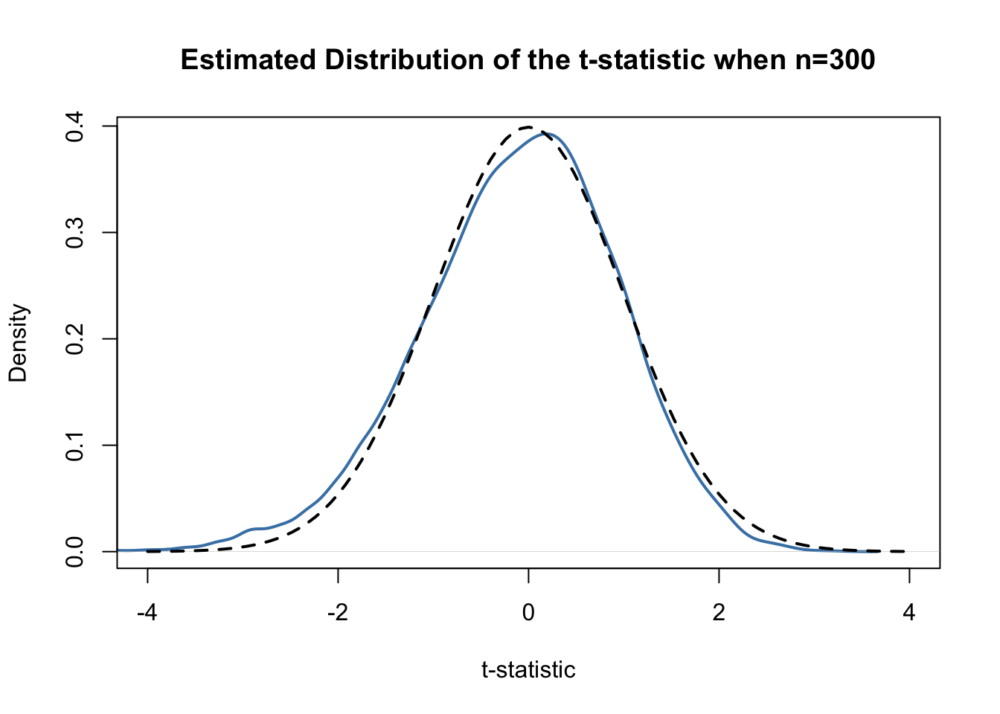
Judging from the plot, the normal approximation works reasonably well for the chosen sample size. This normal approximation has already been used in the definition of the \(p\)-value, see (3.5).
Hypothesis Testing with a Prespecified Significance Level
Key Concept 3.5
The Terminology of Hypothesis Testing
In hypothesis testing, two types of mistakes are possible:
The null hypothesis is rejected although it is true (type-I-error)
The null hypothesis is not rejected although it is false (type-II-error)
The significance level of the test is the probability to commit a type-I-error we are willing to accept in advance. E.g., using a prespecified significance level of \(0.05\), we reject the null hypothesis if and only if the \(p\)-value is less than \(0.05\). The significance level is chosen before the test is conducted.
An equivalent procedure is to reject the null hypothesis if the observed test statistic is, in absolute value terms, larger than the critical value of the test statistic. The critical value is determined by the significance level chosen and defines two disjoint sets of values which are called acceptance region and rejection region. The acceptance region contains all values of the test statistic for which the test does not reject while the rejection region contains all the values for which the test does reject.
The \(p\)-value is the probability that, in repeated sampling under the same conditions a test statistic is observed that provides just as much evidence against the null hypothesis as the test statistic actually observed.
The actual probability that the test rejects the true null hypothesis is called the size of the test. In an ideal setting, the size does equal the significance level.
The probability that the test correctly rejects a false null hypothesis is called power.
Reconsider the pvalue computed further above:
The condition is not fulfilled so we do not reject the null hypothesis correctly.
When working with a \(t\)-statistic instead, it is equivalent to apply the following rule:
\[ \text{Reject } H_0 \text{ if } \lvert t^{act} \rvert > 1.96. \]
We reject the null hypothesis at the significance level of \(5\%\) if the computed \(t\)-statistic lies beyond the critical value of 1.96 in absolute value terms. \(1.96\) is the \(0.975\)-quantile of the standard normal distribution.
# check the critical value
qnorm(p = 0.975)
#> [1] 1.959964
# check whether the null is rejected using the t-statistic computed further above
abs(tstatistic) > 1.96
#> [1] FALSEJust like using the \(p\)-value, we cannot reject the null hypothesis using the corresponding \(t\)-statistic. Key Concept 3.6 summarizes the procedure of performing a two-sided hypothesis test about the population mean \(E(Y)\).
Key Concept 3.6
Testing the Hypothesis \(E(Y) = \mu_{Y,0}\) Against the Alternative \(E(Y) \neq \mu_{Y,0}\)
Estimate \(\mu_{Y}\) using \(\overline{Y}\) and compute the standard error of \(\overline{Y}\), \(SE(\overline{Y})\).
Compute the \(t\)-statistic.
Compute the \(p\)-value and reject the null hypothesis at the \(5\%\) level of significance if the \(p\)-value is smaller than \(0.05\) or, equivalently, if \[ \left\lvert t^{act} \right\rvert > 1.96. \]
One-sided Alternatives
Sometimes we are interested in testing if the mean is bigger or smaller than some value hypothesized under the null. To stick to the book, take the presumed wage gap between well and less educated working individuals. Since we anticipate that such a differential exists, a relevant alternative (to the null hypothesis that there is no wage differential) is that well educated individuals earn more, i.e., that the average hourly wage for this group, \(\mu_Y\) is bigger than \(\mu_{Y,0}\), the average wage of less educated workers which we assume to be known here for simplicity (Section 3.5 discusses how to test the equivalence of to unknown population means).
This is an example of a right-sided test and the hypotheses pair is chosen to be
\[ H_0: \mu_Y = \mu_{Y,0} \ \ \text{vs} \ \ H_1: \mu_Y > \mu_{Y,0}. \]
We reject the null hypothesis if the computed test-statistic is larger than the critical value \(1.64\), the \(0.95\)-quantile of the \(\mathcal{N}(0,1)\) distribution. This ensures that \(1-0.95=5\%\) probability mass remains in the area to the right of the critical value. As before, we can visualize this in R using the function polygon().
# plot the standard normal density on the domain [-4,4]
curve(dnorm(x),
xlim = c(-4, 4),
main = "Rejection Region of a Right-Sided Test",
yaxs = "i",
xlab = "t-statistic",
ylab = "",
lwd = 2,
axes = "F")
# add the x-axis
axis(1,
at = c(-4, 0, 1.64, 4),
padj = 0.5,
labels = c("", 0, expression(Phi^-1~(.95)==1.64), ""))
# shade the rejection region in the left tail
polygon(x = c(1.64, seq(1.64, 4, 0.01), 4),
y = c(0, dnorm(seq(1.64, 4, 0.01)), 0),
col = "darkred")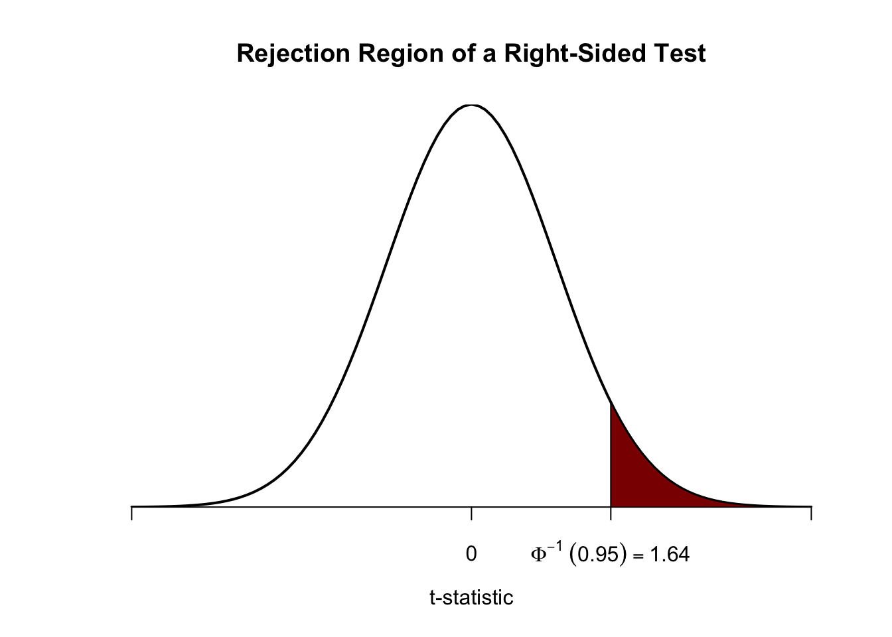
Analogously, for the left-sided test we have \[H_0: \mu_Y = \mu_{Y,0} \ \ \text{vs.} \ \ H_1: \mu_Y < \mu_{Y,0}.\] The null is rejected if the observed test statistic falls short of the critical value which, for a test at the \(0.05\) level of significance, is given by \(-1.64\), the \(0.05\)-quantile of the \(\mathcal{N}(0,1)\) distribution. \(5\%\) probability mass lies to the left of the critical value.
It is straightforward to adapt the code chunk above to the case of a left-sided test. We only have to adjust the color shading and the tick marks.
# plot the the standard normal density on the domain [-4,4]
curve(dnorm(x),
xlim = c(-4, 4),
main = "Rejection Region of a Left-Sided Test",
yaxs = "i",
xlab = "t-statistic",
ylab = "",
lwd = 2,
axes = "F")
# add x-axis
axis(1,
at = c(-4, 0, -1.64, 4),
padj = 0.5,
labels = c("", 0, expression(Phi^-1~(.05)==-1.64), ""))
# shade rejection region in right tail
polygon(x = c(-4, seq(-4, -1.64, 0.01), -1.64),
y = c(0, dnorm(seq(-4, -1.64, 0.01)), 0),
col = "darkred")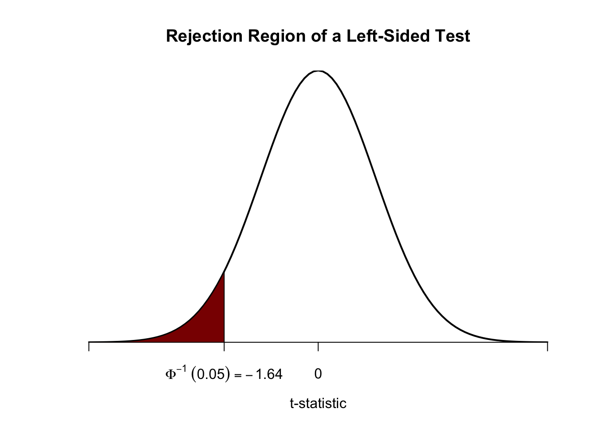
3.4 Confidence Intervals for the Population Mean
As mentioned before, we will never estimate the exact value of the population mean of \(Y\) using a random sample. However, we can compute confidence intervals for the population mean. In general, a confidence interval for an unknown parameter is a recipe that, in repeated samples, yields intervals that contain the true parameter with a prespecified probability, the confidence level. Confidence intervals are computed using the information available in the sample. Since this information is the result of a random process, confidence intervals are random variables themselves.
Key Concept 3.7 shows how to compute confidence intervals for the unknown population mean \(E(Y)\).
Key Concept 3.7
Confidence Intervals for the Population Mean
A \(95\%\) confidence interval for \(\mu_Y\) is a random variable that contains the true \(\mu_Y\) in \(95\%\) of all possible random samples. When \(n\) is large we can use the normal approximation. Then, \(99\%\), \(95\%\), \(90\%\) confidence intervals are
\[\begin{align} &99\%\text{ confidence interval for } \mu_Y = \left[ \overline{Y} \pm 2.58 \times SE(\overline{Y}) \right], \\ &95\%\text{ confidence interval for } \mu_Y = \left[\overline{Y} \pm 1.96 \times SE(\overline{Y}) \right], \\ &90\%\text{ confidence interval for } \mu_Y = \left[ \overline{Y} \pm 1.64 \times SE(\overline{Y}) \right]. \end{align}\]
These confidence intervals are sets of null hypotheses we cannot reject in a two-sided hypothesis test at the given level of confidence.
Now consider the following statements.
In repeated sampling, the interval \[ \left[ \overline{Y} \pm 1.96 \times SE(\overline{Y}) \right] \] covers the true value of \(\mu_Y\) with a probability of \(95\%\).
We have computed \(\overline{Y} = 5.1\) and \(SE(\overline{Y})=2.5\) so the interval \[ \left[ 5.1 \pm 1.96 \times 2.5 \right] = \left[0.2,10\right] \] covers the true value of \(\mu_Y\) with a probability of \(95\%\).
While 1. is right (this is in line with the definition above), 2. is wrong and none of your lecturers wants to read such a sentence in a term paper, written exam or similar, believe us. The difference is that, while 1. is the definition of a random variable, 2. is one possible outcome of this random variable so there is no meaning in making any probabilistic statement about it. Either the computed interval does cover \(\mu_Y\) or it does not!
In R, testing of hypotheses about the mean of a population on the basis of a random sample is very easy due to functions like t.test() from the stats package. It produces an object of type list. Luckily, one of the most simple ways to use t.test() is when you want to obtain a \(95\%\) confidence interval for some population mean. We start by generating some random data and calling t.test() in conjunction with ls() to obtain a breakdown of the output components.
# set seed
set.seed(1)
# generate some sample data
sampledata <- rnorm(100, 10, 10)
# check the type of the outcome produced by t.test
typeof(t.test(sampledata))
#> [1] "list"
# display the list elements produced by t.test
ls(t.test(sampledata))
#> [1] "alternative" "conf.int" "data.name" "estimate" "method"
#> [6] "null.value" "p.value" "parameter" "statistic" "stderr"Though we find that many items are reported, at the moment we are only interested in computing a \(95\%\) confidence set for the mean.
This tells us that the \(95\%\) confidence interval is
\[ \left[9.31, 12.87\right]. \]
In this example, the computed interval obviously does cover the true \(\mu_Y\) which we know to be \(10\).
Let us have a look at the whole standard output produced by t.test().
t.test(sampledata)
#>
#> One Sample t-test
#>
#> data: sampledata
#> t = 12.346, df = 99, p-value < 2.2e-16
#> alternative hypothesis: true mean is not equal to 0
#> 95 percent confidence interval:
#> 9.306651 12.871096
#> sample estimates:
#> mean of x
#> 11.08887We see that t.test() does not only compute a \(95\%\) confidence interval but automatically conducts a two-sided significance test of the hypothesis \(H_0: \mu_Y = 0\) at the level of \(5\%\) and reports relevant parameters thereof: the alternative hypothesis, the estimated mean, the resulting \(t\)-statistic, the degrees of freedom of the underlying \(t\)-distribution (note that t.test() performs the normal approximation) and the corresponding \(p\)-value. This is very convenient!
In this example, we come to the conclusion that the population mean is significantly different from \(0\) (which is correct) at the level of \(5\%\), since \(\mu_Y = 0\) is not an element of the \(95\%\) confidence interval
\[ 0 \not\in \left[9.31,12.87\right]. \] We come to an equivalent result when using the \(p\)-value rejection rule since
\[ p\text{-value} = 2.2\cdot 10^{-16} \ll 0.05. \]
3.5 Comparing Means from Different Populations
Suppose you are interested in the means of two different populations, denote them \(\mu_1\) and \(\mu_2\). More specifically, you are interested in whether these population means are different from each other and plan to use a hypothesis test to verify this on the basis of independent sample data from both populations. A suitable pair of hypotheses is
\[\begin{equation} H_0: \mu_1 - \mu_2 = d_0 \ \ \text{vs.} \ \ H_1: \mu_1 - \mu_2 \neq d_0, \tag{3.6} \end{equation}\]
where \(d_0\) denotes the hypothesized difference in means (so \(d_0=0\) when the means are equal, under the null hypothesis). The book teaches us that \(H_0\) can be tested with the \(t\)-statistic
\[\begin{equation} t=\frac{(\overline{Y}_1 - \overline{Y}_2) - d_0}{SE(\overline{Y}_1 - \overline{Y}_2)} \tag{3.7} \end{equation}\]
where
\[\begin{equation} SE(\overline{Y}_1 - \overline{Y}_2) = \sqrt{\frac{s_1^2}{n_1} + \frac{s_2^2}{n_2}}. \end{equation}\]
This is called a two sample \(t\)-test. For large \(n_1\) and \(n_2\), (3.7) is standard normal under the null hypothesis. Analogously to the simple \(t\)-test we can compute confidence intervals for the true difference in population means:
\[ (\overline{Y}_1 - \overline{Y}_2) \pm 1.96 \times SE(\overline{Y}_1 - \overline{Y}_2) \]
is a \(95\%\) confidence interval for \(d\).
In R, hypotheses as in (3.6) can be tested with t.test(), too. Note that t.test() chooses \(d_0 = 0\) by default. This can be changed by setting the argument mu accordingly.
The subsequent code chunk demonstrates how to perform a two sample \(t\)-test in R using simulated data.
# set random seed
set.seed(1)
# draw data from two different populations with equal mean
sample_pop1 <- rnorm(100, 10, 10)
sample_pop2 <- rnorm(100, 10, 20)
# perform a two sample t-test
t.test(sample_pop1, sample_pop2)
#>
#> Welch Two Sample t-test
#>
#> data: sample_pop1 and sample_pop2
#> t = 0.872, df = 140.52, p-value = 0.3847
#> alternative hypothesis: true difference in means is not equal to 0
#> 95 percent confidence interval:
#> -2.338012 6.028083
#> sample estimates:
#> mean of x mean of y
#> 11.088874 9.243838We find that the two sample \(t\)-test does not reject the (true) null hypothesis that \(d_0 = 0\).
3.6 An Application to the Gender Gap of Earnings
This section discusses how to reproduce the results presented in the box The Gender Gap of Earnings of College Graduates in the United States of the book.
In order to reproduce Table 3.1 of the book you need to download the replication data which are hosted by Pearson and can be downloaded here. This file contains data that range from \(1992\) to \(2008\) and earnings are reported in prices of \(2008\).
There are several ways to import the .xlsx-files into R. Our suggestion is the function read_excel() from the readxl package (Wickham and Bryan 2023). The package is not a part of R’s base version and has to be installed manually.
You are now ready to import the dataset. Make sure you use the correct path to import the downloaded file! In our example, the file is saved in a subfolder of the working directory named data. If you are not sure what your current working directory is, use getwd(), see also ?getwd. This will give you the path that points to the place R is currently looking for files to work with.
Next, install and load the package dyplr (Wickham et al. 2023). This package provides some handy functions that simplify data wrangling a lot. It makes use of the %>% operator.
First, get an overview over the dataset. Next, use %>% and some functions from the dplyr package to group the observations by gender and year and compute descriptive statistics for both groups.
# get an overview of the data structure
head(cps)
#> # A tibble: 6 × 3
#> a_sex year ahe08
#> <dbl> <dbl> <dbl>
#> 1 1 1992 17.2
#> 2 1 1992 15.3
#> 3 1 1992 22.9
#> 4 2 1992 13.3
#> 5 1 1992 22.1
#> 6 2 1992 12.2
# group data by gender and year and compute the mean, standard deviation
# and number of observations for each group
avgs <- cps %>%
group_by(a_sex, year) %>%
summarise(mean(ahe08),
sd(ahe08),
n())
# print the results to the console
print(avgs)
#> # A tibble: 10 × 5
#> # Groups: a_sex [2]
#> a_sex year `mean(ahe08)` `sd(ahe08)` `n()`
#> <dbl> <dbl> <dbl> <dbl> <int>
#> 1 1 1992 23.3 10.2 1594
#> 2 1 1996 22.5 10.1 1379
#> 3 1 2000 24.9 11.6 1303
#> 4 1 2004 25.1 12.0 1894
#> 5 1 2008 25.0 11.8 1838
#> 6 2 1992 20.0 7.87 1368
#> 7 2 1996 19.0 7.95 1230
#> 8 2 2000 20.7 9.36 1181
#> 9 2 2004 21.0 9.36 1735
#> 10 2 2008 20.9 9.66 1871With the pipe operator %>%, we simply chain different R functions that produce compatible input and output. In the code above, we take the dataset cps and use it as an input for the function group_by(). The output of group_by is subsequently used as an input for summarise() and so forth.
Now that we have computed the statistics of interest for both genders, we can investigate how the gap in earnings between both groups evolves over time.
# split the dataset by gender
male <- avgs %>% dplyr::filter(a_sex == 1)
female <- avgs %>% dplyr::filter(a_sex == 2)
# rename columns of both splits
colnames(male) <- c("Sex", "Year", "Y_bar_m", "s_m", "n_m")
colnames(female) <- c("Sex", "Year", "Y_bar_f", "s_f", "n_f")
# estimate gender gaps
gap <- male$Y_bar_m - female$Y_bar_f
# compute standard errors
gap_se <- sqrt(male$s_m^2 / male$n_m + female$s_f^2 / female$n_f)
#Compute confidence intervals for all dates
gap_ci_l <- gap - 1.96 * gap_se
gap_ci_u <- gap + 1.96 * gap_se
result <- cbind(male[,-1], female[,-(1:2)], gap, gap_se, gap_ci_l, gap_ci_u)
# print the results to the console
print(result, digits = 3)
#> Year Y_bar_m s_m n_m Y_bar_f s_f n_f gap gap_se gap_ci_l gap_ci_u
#> 1 1992 23.3 10.2 1594 20.0 7.87 1368 3.23 0.332 2.58 3.88
#> 2 1996 22.5 10.1 1379 19.0 7.95 1230 3.49 0.354 2.80 4.19
#> 3 2000 24.9 11.6 1303 20.7 9.36 1181 4.14 0.421 3.32 4.97
#> 4 2004 25.1 12.0 1894 21.0 9.36 1735 4.10 0.356 3.40 4.80
#> 5 2008 25.0 11.8 1838 20.9 9.66 1871 4.10 0.354 3.41 4.80We observe virtually the same results as the ones presented in the book. The computed statistics suggest that there is a gender gap in earnings. Note that we can reject the null hypothesis that the gap is zero for all periods. Further, estimates of the gap and bounds of the \(95\%\) confidence intervals indicate that the gap has been quite stable in the recent past.
3.7 Scatterplots, Sample Covariance and Sample Correlation
A scatter plot represents two dimensional data, for example \(n\) observations on \(X_i\) and \(Y_i\), by points in a coordinate system. It is very easy to generate scatter plots using the plot() function in R. Let us generate some artificial data on age and earnings of workers and plot it.
# set random seed
set.seed(123)
# generate dataset
X <- runif(n = 100,
min = 18,
max = 70)
Y <- X + rnorm(n=100, 50, 15)
# plot observations
plot(X,
Y,
type = "p",
main = "A Scatterplot of X and Y",
xlab = "Age",
ylab = "Earnings",
col = "steelblue",
pch = 19)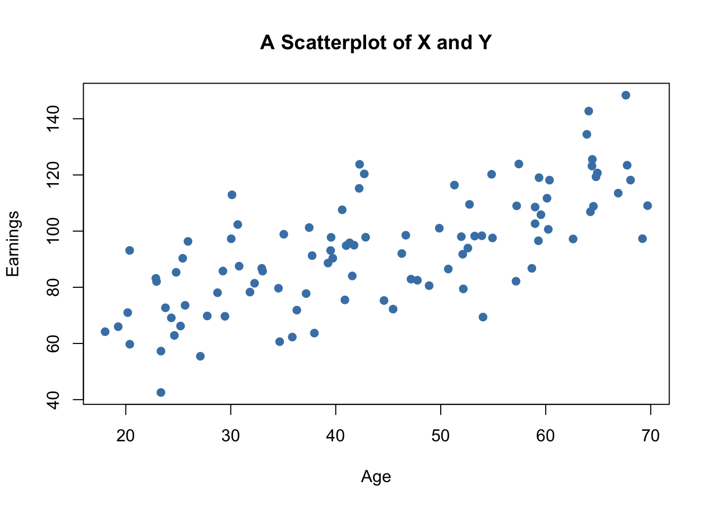
The plot shows positive correlation between age and earnings. This is in line with the notion that older workers earn more than those who joined the working population recently.
Sample Covariance and Correlation
By now you should be familiar with the concepts of variance and covariance. If not, we recommend you to work your way through Chapter 2 of the book.
Just like the variance, covariance and correlation of two variables are properties that relate to the (unknown) joint probability distribution of these variables. We can estimate covariance and correlation by means of suitable estimators using a sample \((X_i,Y_i)\), \(i=1,\dots,n\).
The sample covariance
\[ s_{XY} = \frac{1}{n-1} \sum_{i=1}^n (X_i - \overline{X})(Y_i - \overline{Y}) \]
is an estimator for the population variance of \(X\) and \(Y\) whereas the sample correlation
\[ r_{XY} = \frac{s_{XY}}{s_Xs_Y} \] can be used to estimate the population correlation, a standardized measure for the strength of the linear relationship between \(X\) and \(Y\). See Chapter 3.7 in the book for a more detailed treatment of these estimators.
As for variance and standard deviation, these estimators are implemented as R functions in the stats package. We can use them to estimate population covariance and population correlation of the artificial data on age and earnings.
# compute sample covariance of X and Y
cov(X, Y)
#> [1] 213.934
# compute sample correlation between X and Y
cor(X, Y)
#> [1] 0.706372
# an equivalent way to compute the sample correlation
cov(X, Y) / (sd(X) * sd(Y))
#> [1] 0.706372The estimates indicate that \(X\) and \(Y\) are moderately correlated.
The next code chunk uses the function mvnorm() from package MASS (Ripley 2023) to generate bivariate sample data with different degrees of correlation.
library(MASS)
# set random seed
set.seed(1)
# positive correlation (0.81)
example1 <- mvrnorm(100,
mu = c(0, 0),
Sigma = matrix(c(2, 2, 2, 3), ncol = 2),
empirical = TRUE)
# negative correlation (-0.81)
example2 <- mvrnorm(100,
mu = c(0, 0),
Sigma = matrix(c(2, -2, -2, 3), ncol = 2),
empirical = TRUE)
# no correlation
example3 <- mvrnorm(100,
mu = c(0, 0),
Sigma = matrix(c(1, 0, 0, 1), ncol = 2),
empirical = TRUE)
# no correlation (quadratic relationship)
X <- seq(-3, 3, 0.01)
Y <- - X^2 + rnorm(length(X))
example4 <- cbind(X, Y)
# divide plot area as 2-by-2 array
par(mfrow = c(2, 2))
# plot datasets
plot(example1, col = "steelblue", pch = 20, xlab = "X", ylab = "Y",
main = "Correlation = 0.81")
plot(example2, col = "steelblue", pch = 20, xlab = "X", ylab = "Y",
main = "Correlation = -0.81")
plot(example3, col = "steelblue", pch = 20, xlab = "X", ylab = "Y",
main = "Correlation = 0")
plot(example4, col = "steelblue", pch = 20, xlab = "X", ylab = "Y",
main = "Correlation = 0")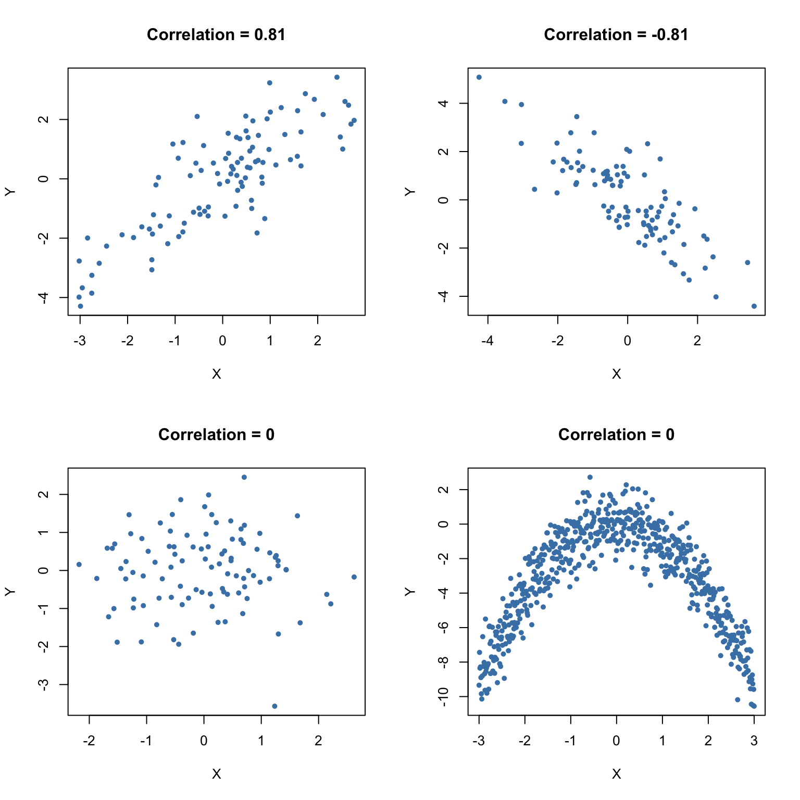
3.8 Exercises
1. Biased …
Consider the following alternative estimator for \(\mu_Y\), the mean of the \(Y_i\)
\[\widetilde{Y}=\frac{1}{n-1}\sum\limits_{i=1}^n Y_i\]
In this exercise we will illustrate that this estimator is a biased estimator for \(\mu_Y\).
Instructions:
Define a function Y_tilde that implements the estimator above.
Randomly draw 5 observations from the \(\mathcal{N}(10, 25)\) distribution and compute an estimate using Y_tilde(). Repeat this procedure 10000 times and store the results in est_biased.
Plot a histogram of est_biased.
Add a red vertical line at \(\mu=10\) using the function abline().
Hints:
To compute the sum of a vector you can use sum(), to get the length of a vector you can use length().
Use the function replicate() to compute repeatedly estimates of random samples. With the arguments expr and n you can specify the operation and how often it has to be replicated.
A histogram can be plotted with the function hist().
The point on the x-axis as well as the color for the vertical line can be specified via the arguments v and col.
2. … but consistent estimator
Consider again the estimator from the previous exercise. It is available in your environment as the function Y_tilde(). You are requested to do the same procedure as in the previous exercise. This time, however, increase the number of observations to draw from 5 to 1000.
What do you notice? What can you say about this estimator?
Instructions:
Randomly draw 1000 observations from the \(\mathcal{N}(10, 25)\) distribution and compute an estimate of the mean using Y_tilde(). Repeat this procedure 10000 times and store the results in est_consistent.
Plot a histogram of est_consistent.
Add a red vertical line at \(\mu=10\) using the function abline().
Hints:
Use the function replicate() to compute estimates of repeatedly drawn random samples. Using the arguments expr and n you may specify the operation and how often it will be replicated.
A histogram can be plotted with the function hist().
The position on the x-axis as well as the color for the vertical line can be specified via the arguments v and col.
3. Efficiency of an Estimator
In this exercise we want to illustrate the result that the sample mean
\[\hat{\mu}_Y=\sum\limits_{i=1}^{n}a_iY_i\] with the equal weighting scheme \(a_i=\frac{1}{n}\) for \(i=1,...,n\) is the best linear unbiased estimator (BLUE) of \(\mu_Y\).
As an alternative, consider the estimator
\[\tilde{\mu}_Y=\sum\limits_{i=1}^{n}b_iY_i\]
where \(b_i\) gives the first \(\frac{n}{2}\) observations a higher weighting than the second \(\frac{n}{2}\) observations (we assume that \(n\) is even for simplicity).
The vector of weights w has been defined already and is available in your working environment.
Instructions:
Verify that \(\tilde{\mu}\) is an unbiased estimator of \(\mu_Y\), the mean of the \(Y_i\).
Implement the alternative estimator of \(\mu_Y\) as a function mu_tilde().
Randomly draw 100 observations from the \(\mathcal{N}(5, 100)\) distribution and compute estimates with both estimators. Repeat this procedure 10000 times and store the results in est_bar and est_tilde.
Compute the sample variances of est_bar and est_tilde. What can you say about both estimators?
Hints:
In order for \(\tilde{\mu}\) to be an unbiased estimator all weights have to sum up to 1.
Use the function replicate() to compute estimates of repeatedly drawn samples. With the arguments expr and n you can specify the operation and how often it is replicated.
You may use var() the compute the sample variance.
4. Hypothesis Test — \(t\)-statistic
Consider the CPS dataset from Chapter 3.6 again. The dataset cps is available in your working environment.
We suppose that the average hourly earnings (in prices of 2012) ahe12 exceed 23.50 \(\$/h\) and wish to test this hypothesis at a significance level of \(\alpha=0.05\). Please do the following:
Instructions:
Compute the test statistic by hand and assign it to tstat.
Use tstat to accept or reject the null hypothesis. Please do so using the normal approximation.
Hints:
We test \(H_0:\mu_{Y_{ahe}}\leq 23.5\) vs. \(H_1:\mu_{Y_{ahe}}>23.5\). That is, we conduct a right-sided test.
The \(t\)-statistic is defined as \(\frac{\bar{Y}-\mu_{Y,0}}{s_{Y}/\sqrt{n}}\) where \(s_Y\) denotes the sample variance.
To decide whether the null hypothesis is accepted or rejected you can compare the \(t\)-statistic with the respective quantile of the standard normal distribution. Use logical operators.
5. Hypothesis Test — \(p\)-value
Reconsider the test situation from the previous exercise. The dataset cps as well as the vector tstat are available in your working environment.
Instead of using the \(t\)-statistic as decision criterion you may also use the \(p\)-value. Now please do the following:
Instructions:
Compute the \(p\)-value by hand and assign it to pval.
Use pval to accept or reject the null hypothesis.
Hints:
The \(p\)-value for a right-sided test can be computed as \(p=P(t>t^{act}|H_0)\).
We reject the null if \(p<\alpha\). Use logical operators to check for this.
6. Hypothesis Test — One Sample \(t\)-test
In the last two exercises we discussed two ways of conducting a hypothesis test. These approaches are somewhat cumbersome to apply by hand which is why R provides the function t.test(). It does most of the work automatically. t.test() provides \(t\)-statistics, \(p\)-values and even confidence intervals (more on the latter in later exercises). Note that t.test() uses the \(t\)-distribution instead of the normal distribution which becomes important when the sample size is small.
The dataset cps and the variable pval from Exercise 3.4 are available in your working environment.
Instructions:
Conduct the hypothesis test from previous exercises using the function t.test().
Extract the \(t\)-statistic and the \(p\)-value from the list created by t.test(). Assign them to the variables tstat and pvalue.
Verify that using the normal approximation here is valid as well by computing the difference between both \(p\)-values.
Hints:
The type of the test as well as the null hypothesis can be specified via the arguments alternative and mu.
The \(t\)-statistic and the \(p\)-value can be obtained via $statistic and $p.value, respectively.
7. Hypothesis Test — Two Sample \(t\)-test
Consider the annual maximum sea levels at Port Pirie (Southern Australia) and Fremantle (Western Australia) for the last 30 years.
The observations are made available as vectors portpirie and fremantle in your working environment.
Instructions:
- Test whether there is a significant difference in the annual maximum sea levels at a significance level of \(\alpha=0.05\).
Hints:
We test \(H_0:\mu_{P}-\mu_{F}=0\) vs. \(H_1:\mu_{P}-\mu_{F}\ne 0\). That is, we conduct a two sample \(t\)-test.
For a two sample \(t\)-test the function t.test() expects two vectors containing the data.
8. Confidence Interval
Reconsider the test situation concerning the annual maximum sea levels at Port Pirie and Fremantle.
The variables portpirie and fremantle are again available in your working environment.
Instructions:
- Construct a \(95\%\)-confidence interval for the difference in the sea levels using t.test().
Hint:
- The function t.test() computes a \(95\%\) confidence interval by default. This is accessible via $conf.int.
9. (Co)variance and Correlation I
Consider a random sample \((X_i, Y_i)\) for \(i=1,...,100\).
The respective vectors X and Y are available in your working environment.
Instructions:
Compute the variance of \(X\) using the function cov().
Compute the covariance of \(X\) and \(Y\).
Compute the correlation between \(X\) and \(Y\).
Hints:
The variance is a special case of the covariance.
cov() as well as cor() expect a vector for each variable.
10. (Co)variance and Correlation II
In this exercise we want to examine the limitations of the correlation as a dependency measure.
Once the session has initialized you will see the plot of 100 realizations from two random variables \(X\) and \(Y\).
The respective observations are available in the vectors X and Y in your working environment.
Instructions:
- Compute the correlation between \(X\) and \(Y\). Interpret your result critically.
Hint:
- cor() expects a vector for each variable.